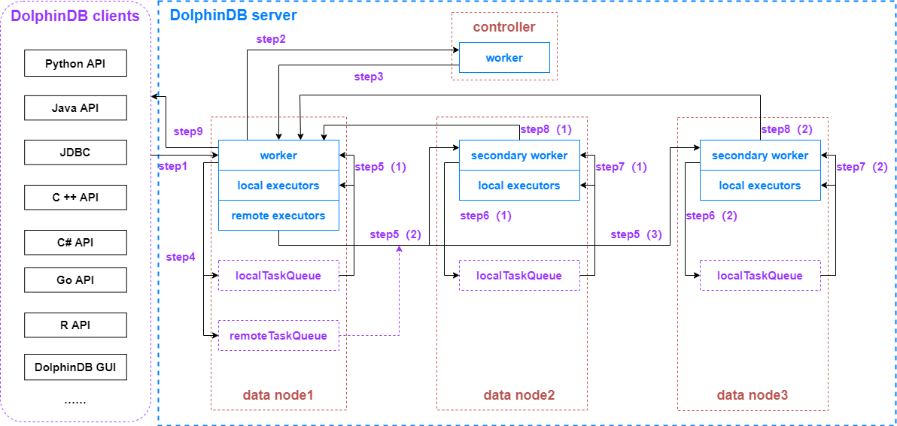

线程模型
分布式系统较为复杂，写入与查询都可能需要多个节点的配合以完成操作。通过了解 SQL 查询的全过程，帮助我们了解分布式系统，掌握 DolpinDB 的配置，以及优化系统性能的方法。
本教程以一个分布式 SQL 查询为例，介绍 DolphinDB 分布式数据库查询过程的数据流，以及其经历的各类线程池。
DolphinDB 的主要节点类型
controller（控制节点）
负责收集代理节点、数据节点和计算节点的心跳，监控每个节点的工作状态，管理分布式文件系统的元数据和事务。
datanode（数据节点）
既可以存储数据，也可以用于数据的查询和计算。
compute node（计算节点）
只用于数据的查询和计算。计算节点应用于计算密集型的操作，包括流计算、分布式关联和机器学习等场景。计算节点不存储数据，但可以通过 loadTable 加载数据进行计算。通过在集群中配置计算节点，可以将写入任务提交到数据节点、所有计算任务提交到计算节点，实现存储和计算的分离。
1.30.14/2.00.1版本开始支持计算节点。
DolphinDB 线程类型
worker
常规交互作业的工作线程。
用于接收客户端请求，将任务分解为多个子任务。工作线程将根据任务涉及到的分区，将任务分配给对应分区所在的节点来执行。因此，各子任务可能由工作线程自己执行，或者发送给 local executor 或 remote executor 执行。
secondary worker
次级工作线程。
当前节点产生的远程子任务，会在远程节点的次级工作线程上执行，用于避免作业环，解决节点间的任务循环依赖而导致的死锁问题。
local executor
本地执行线程。
worker 拆解完任务后生成的本地子任务队列，由同节点下的 local executor 执行。每个 local executor 一次只能处理一个子任务。
ploop、peach等并行计算函数的计算任务在本地执行线程完成。remote executor
远程执行线程。
将远程子任务发送到远程节点的独立线程。
batch job worker
使用
submitJob或submitJobEx创建批处理作业的工作线程。该线程在任务执行完后若闲置 60 秒，将被系统自动回收，不再占用系统资源。
web worker
处理 HTTP 请求的工作线程。
DolphinDB 提供了基于 web 的集群管理界面，用户可以通过 web 与 DolphinDB 节点进行交互。交互过程中提交的请求由该线程处理。
dynamic worker
动态工作线程。
当所有的工作线程被占满但仍有新任务到来时，系统会自动创建动态工作线程来执行新任务。根据系统并发任务的繁忙程度，总共可以创建三组动态工作线程，每一个级别可以创建 maxDynamicWorker 个动态工作线程。该线程在任务执行完后若闲置 60 秒则会被系统自动回收，不再占用系统资源。
infra worker
基础设施处理线程。
当开启元数据高可用或流数据高可用时，系统会自动创建基础设施处理线程，用于处理 raft 组内各节点的信息同步工作。
urgent worker
紧急工作线程。
接收时间敏感度高的系统级别任务，如登录
login，取消作业cancelJob、cancelConsoleJob。diskIO worker
磁盘数据读写线程。
通过参数 diskIOConcurrencyLevel 控制。如果 diskIOConcurrencyLevel = 0，表示使用当前任务执行的线程来读写磁盘数据。如果 diskIOConcurrencyLevel > 0，系统将会创建指定个数的线程来读写磁盘数据。（diskIOConcurrencyLevel 详见本文不同类型线程与配置参数的关系）。
一次 SQL 查询的线程经历
SQL 查询可提交到集群中任一计算节点或数据节点。获得请求的节点作为该查询的协调节点。
下面以 API 向协调节点发起一次 SQL 查询为例，讲述整个过程中所调度的所有线程。

step1：DolphinDB 客户端向协调节点（数据节点或计算节点）发起数据查询请求
以协调节点为数据节点为例，发起一次聚合查询，查询语句如下：
select avg(price) from loadTable("dfs://database", "table") where date between 2021.01.01 : 2021.12.31 group by date假设上述聚合查询语句总共涉及 300 个分区的数据，且正好平均分配在三个数据节点（即每个数据节点包含了100个查询的分区数据）。
DolphinDB 客户端将查询请求进行二进制序列化后通过 TCP 协议传输给 datanode1。
step2：datanode1 收到查询请求
datanode1 收到客户端的查询请求后，将分配 1 个 worker 线程对内容进行反序列化和解析。当发现内容是 SQL 查询时，会向 controller 发起请求，获取跟这个查询相关的所有分区的信息。整个 SQL 查询执行完毕前，这个 worker 线程会被一直占用。
step3：controller 收到 datanode1 的请求
controller 收到 datanode1 的请求后，将分配 1 个 worker 线程对内容进行反序列化和解析，准备好本次 SQL 查询涉及的数据分区信息后，由该 worker 线程序列化后通过 TCP 协议传输给 datanode1。controller 的 worker 完成该工作后将从队列中获取下一个请求。
step4：datanode1 收到 controller 返回的信息
datanode1 收到 controller 返回的信息后，由本节点下的 worker 线程对内容进行反序列化和解析。
得知本次 SQL 查询涉及的数据分区信息后，将位于本节点的分区数据计算任务添加到本地任务队列，此时本地任务队列会产生 100 个子任务。
同时，把需要使用远程节点 datanode2 与 datanode3 的分区数据的计算任务，以任务包的方式发送到远程任务队列。远程任务队列会被添加2个远程任务，分别打上 datanode2 和 datanode3 的标志。
step5(1)：本地 worker 和 local executor 消费本地任务队列
此时，datanode1 中的 worker 线程和 local executor 线程会同时并行消费本地任务队列的子任务。所以配置项中的 workerNum 和 localExecutors 很大程度上决定了系统的并发计算能力。
step5(2)(3)：本地 remote executor 发送远程任务至远程节点
同时，remote executor 线程将远程任务队列的内容序列化后，通过 TCP 协议分别发送到 datanode2 和 datanode3。
step6(1)(2)：远程节点收到远程任务
datanode2 和 datanode3 收到远程任务后，将分配 1 个 secondary worker 线程对内容进行反序列化和解析，并将计算任务发送到本地任务队列，此时 datanode2 和 datanode3 的本地任务队列各会产生 100 个子任务。
step7(1)(2)：远程节点 secondary worker 和 local executor 消费本地任务队列
此时，datanode2 和 datanode3 上一直占用的 secondary worker 线程和 local executor 线程会同时并行消费本地任务队列的子任务。所以配置项中的 secondaryWorkerNum 对系统的并发计算能力也有一定影响。
step8(1)(2)：远程节点返回中间计算结果至 datanode1
当 datanode2 和 datanode3 涉及的计算任务完成后，分别得到了本次 SQL 查询的中间计算结果，由一直占用的 secondary worker 线程对内容进行序列化后，通过 TCP 协议传输给 datanode1。
step9：datanode1 计算最终结果并返回给客户端
datanode1 接收到 datanode2 和 datanode3 返回的中间计算结果后，由一直占用的 worker 线程对内容进行反序列化，然后在该线程上计算出最终结果，并在序列化后通过 TCP 协议传输给客户端。
DolphinDB 客户端接收到 datanode1 返回的信息后，经过反序列化显示本次 SQL 查询的结果。
协调节点为数据节点和计算节点的区别：
数据节点可以存储数据，计算节点不能存储数据。但计算节点解析客户端的 SQL 查询后，从 controller 拿到本次 SQL 查询涉及的数据分区信息，会将所有数据查询任务都分配到数据节点执行，得到每个 数据节点返回的中间结果，最后调度计算节点的 worker 计算最终结果并返回给客户端。
当实时写入的数据量非常大时，建议配置计算节点，将所有 SQL 查询都提交到计算节点，实现存储和计算的分离，减轻数据节点的计算工作负担。
优化建议
通过分析上述的线程经历，可以发现，本次 SQL 查询一共发生了8次 TCP 传输，其中 2 次是 DolphinDB server 和 DolphinDB client 之间的传输。如果查询结果的数据量比较大，同时又对查询结果的延时性比较敏感，可以选择如下7个优化方向：
集群节点之间，以及节点和客户端之间的通信推荐使用万兆以太网。
线程配置参数优化。(详见本文下一节表格中的优化推荐配置列)
增加每个节点的物理磁盘的数量。更多的磁盘可以更快速地并行读取多个分区的数据。
SQL 语句优化：where 条件添加分区字段的信息过滤，起到分区剪枝的目的，避免全表扫描。
在查询数据量较大时，可对 API 查询结果进行数据压缩，提高传输效率。开启压缩后从 server 下载的数据即为压缩后的数据。Java 代码示例如下。
//API 建立 connection 的时候将第三个参数 compress 设置为 true 即可开启压缩 DBConnection connection = new DBConnection(false, false, true); connection.connect(HOST, PORT, "admin", "123456"); BasicTable basicTable = (BasicTable) connection.run("select * from loadTable(\"dfs://database\", \"table\")");
增加 license 限制的 CPU 核心数和内存大小，提升系统的并发处理能力。
不同类型线程与配置参数的关系
| 线程类型 | 配置参数 | 默认配置 | 优化建议配置 |
|---|---|---|---|
| worker | workerNum | CPU 的内核数 | license 限制的 CPU 核心数与物理机 CPU 核心数两者的最小值 |
| local executor | localExecutors | workerNum-1 | |
| remote executor | remoteExecutors | 1 | 集群的节点数-1 |
| batch job worker | maxBatchJobWorker | workerNum | |
| web worker | webWorkerNum | 1 | 控制节点 webWorkerNum 配置为 4，数据节点 webWorkerNum 配置为 1 |
| secondary worker | secondaryWorkerNum | workerNum | |
| dynamic worker | maxDynamicWorker | workerNum | |
| infra worker | infraWorkerNum | 2 | |
| urgent worker | urgentWorkerNum | 1 | |
| diskIO worker | diskIOConcurrencyLevel | 1 | hdd 磁盘和ssd 磁盘建议不同配置 |
备注：
- 如果是单节点 single 模式或者是单数据节点集群，不需要配置 remoteExecutors 的值。
- 大多情况下很少通过 web 与 DolphinDB 节点交互的方式提交查询任务。
- 对于 hdd 磁盘，推荐 diskIOConcurrencyLevel 设为对应节点下通过 volumes 参数配置的磁盘个数。对于 ssd 磁盘，推荐 diskIOConcurrencyLevel = 0。